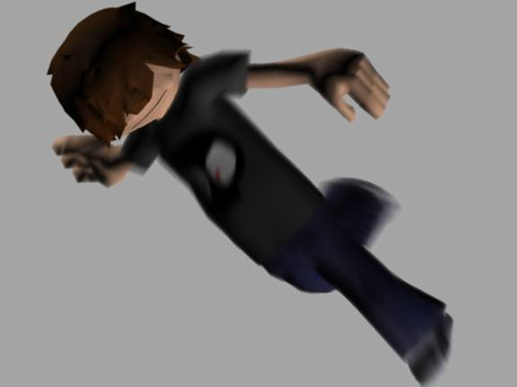
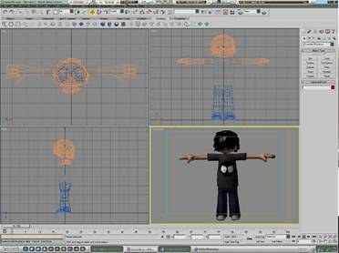
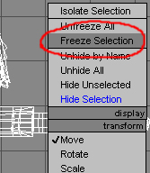
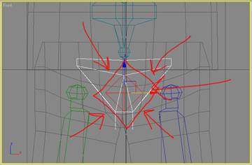
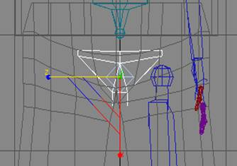
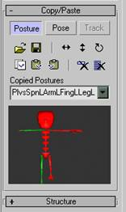
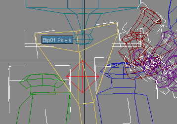
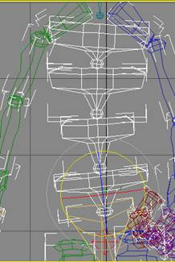

Creating Cal3D Characters with 3D Studio MAX
Contributed by James Allen < jamesa@vrac.iastate.edu
>
All images and content © 2003 by James Allen
Part 1: The Basics
The joy of creating a
virtual character or creature is that the possibilities are limitless
on what they can do. The exciting thing is that as computers get faster,
the more it is possible to create and bring to life virtual worlds, full
of interacting people and creatures. As animators, it is our job to animate,
or breathe life into 3D models.
This tutorial assumes that you have a low-polygon
model ready for animation. It also assumes that you have a basic
knowledge of terminology in computer graphics,
and a good knowledge of 3D Studio Max. For
this tutorial, I'm using Max 5.1 with Character Studio 4.0.
If you are a novice MAX user, I'd suggest
the tutorials that come with MAX, as they are very well written and will
give you a basic knowledge of this wonderful program.
First, we've got to go over some basics of what actually goes on
when animating a character. By knowing these basics, you can then use
this tutorial to fit your own needs.
For those of you not familiar with Character Studio at all, it is
a plug-in that ships with 3DS Max, which makes the process of rigging
a character much easier. What's rigging a character you ask? A character
is your mesh or model that needs to be animated, and before it can be animated,
we need to create a system of hierarchies that act as a skeleton. It is
this skeleton that we actually animate.
Like in our own bodies, our virtual characters get bones as well,
and not only do these bones act as a controlling structure, but also
can control deformations such as muscle bulge, etc. Character Studio takes
Max's already great bones system, and simplifies it, making it much faster
and easier to rig a character. It is possible, and sometimes necessary to
combine the Character Studio Biped and Max's traditional bones, i.e. a third
leg or arm, or perhaps a bunch of tentacles, etc.
This brings me to the basics of Character Studio. Character Studio
consists of 2 programs within the package: Biped & Physique. Biped
is the skeleton structure that will control your character. Physique is
the modifier you give your character that links it to Biped, thus allowing
Biped to have complete control of your character.
Part 2: Rigging
All right, now we can finally start setting up our mesh! Load your
model into Max: it's time to get started! Okay, I've got my Max with 4
views, which is the default mode: Top, Front, Right and Perspective in the
lower right corner. Make sure your model is in the center of the workspace,
which is 0 for the X and Y axes, and the feet should be at 0 for the Z axis.
This way, when we export to Cal3D, it will be properly aligned with the coordinate
axes (see figure 1).

Figure 1 : Window
setup
The character I'll be rigging today is Jason (see figure 2), who
is one of the kids in an animation I'm currently working on. Because we
don't need to edit Jason just yet, we'll select all the pieces that make
up Jason's arms, head, legs, feet and shirt.

Figure 2 : The "Jason" character
Setting up the Biped
Once you have your entire model selected, first hit Alt-X, which turns him semi-transparent.
After he's transparent, right-click on or around him and freeze him (see figure 3). We'll thaw him out soon enough. We
freeze him so we don't accidentally click on him while we're setting up
the Biped.

Figure 3 : Freezing
a model
Now, click on the Create
tab, and go to the Systems button.
Click on the Biped button
(see figure 4). In the front viewport, click and drag from the bottom of
the feet to the top of the Biped's head. Click on the Motion tab, and then select any one
of his appendages. Under the Motion
tab, you'll get a whole gamut of settings and options will appear. Click
on the little icon that resembles a stick figure. This will put us in Figure
Mode, which allows us to configure the Biped to conform to our character.
Figure Mode is used for rigging our character, as well as change settings
without affecting animation.
 Figure 4 : Creating
a biped object
Figure 4 : Creating
a biped object
Moving right along, you'll see under the initial icons, Track Selection,
Copy/Paste, and Structure. If it isn't already visible, click on the
Structure rollout. Because Jason
isn't a super complex character, many of the Biped's settings can remain
the same, but here is how I have set him up for Jason (see figure 5). Just
a few things have changed from the default, like number of fingers, links,
etc. As you can see, you can give your model a ponytail, braids, props,
more leg or spine links, and even have forearm twist, with as many as 10
links! This provides much more realism when rotating the wrist, but for
today we'll leave that option unchecked.
 Figure 5 : Biped
settings
Figure 5 : Biped
settings
Now that we've explored the Structure rollout, we need to make the
Biped conform to the physiological standards of Jason. In the front viewport,
click on the triangle-looking thing located at the Biped's pelvis (see
figure 6). This is the Center of Mass,
which acts as the base point for all of the Biped. Select the Center of Mass and position it right
at the crotch area of your model (as in figure 7).

Figure 6 : The
biped's center of mass

Figure 7 : Placement
of the center of mass
Next, select the right arm & hand, clavicle, and the left leg
& foot. Right click and hide these appendages. Now select the Pelvis
object and click on the Non-Uniform Scale
icon -  . This is the icon next
to the Move icon. If the Uniform Scale button is visible, notice the
little arrow at the lower right indicating more tools, so press &
hold with the left mouse button for a couple of seconds, and you'll get
to choose from available scaling tools.
. This is the icon next
to the Move icon. If the Uniform Scale button is visible, notice the
little arrow at the lower right indicating more tools, so press &
hold with the left mouse button for a couple of seconds, and you'll get
to choose from available scaling tools.
Use this to scale the pelvis so that the left leg is roughly in the
middle of Jason's left leg. Then start working your way down his left leg
by scaling length & relative shape. Keep in mind that Character Studio
4's new Biped object is much more skeletal shaped than in previous versions,
thus thick bones are not needed. As you are scaling, make sure to line the
knees up, and move the feet into position.
The spine needs to be a bit bigger as well. Starting with the base
of the spine, scale it just a bit, and then go on to the next link, on
up to the neck. They should be about the same size, and put the shoulders
and neck in the correct position.
The Biped's
head needs to be a bit bigger. Using our Non-Uniform
Scaling tool, we scale it to be about the size of Jason's
head. You may have to also scale the spine a bit as well. Last but not
least, scale the arms, hand, and fingers to match our model. When finished,
the left side of your character's Biped object should be closely matched
with its mesh, as in figure 8 below.
 Figure 8 : Finished
left-hand side of Jason's biped object
Figure 8 : Finished
left-hand side of Jason's biped object
Once you've gotten the left side all set up, its time to get the
rest of the Biped in order. A very nice thing about Character Studio 4
is the Copy/Paste rollout. Drag
your mouse and select the whole Biped that's visible. Then, click on the
Copy/Paste rollout
and under that, the Posture button. Click on
Copy Posture. Now, unhide the rest
of the Biped, and hit Paste Posture Opposite.
This will take all of our changes that we made to the left side, and bring
them to the right side, thus making the Biped symmetrical. If you are
satisfied with your Biped, it is a very good idea at this point to click
on the diskette icon, which will allow us to save our Biped figure and
all of our presets. Many times I will start animating and forget to turn
off Figure Mode, thus losing my neutral pose.

Figure 9 : Copying
biped posture from left to right sides
Applying the Physique modifier
Now it's time to assign
the Physique modifier. In a viewport, right-click
and hit Unfreeze All. Now that
Jason is all thawed out, click on his feet. For Jason's character, because
he has many parts (i.e. the legs are separate from arms) we will give each
part a Physique modifier. Click on the Modifier
tab, and it will be under the modifier list. You can add it to a custom
button by clicking on the little button icon in the upper right corner
of the Modifier rollout (see figure 10).
 Figure 10 : The
Physique modifier rollout
Figure 10 : The
Physique modifier rollout
Select each part of your model and give each part a physique modifier.
After assigning Physique, click on the Link
to Root Node button  , and then clicking on the Center of Mass
for the Biped. When you do this, a window will appear which allows you
to preset how Physique sets up its influences. For this tutorial, we'll
just leave it as default. It really doesn't matter what order you apply
physique, but if you have many, many parts to a model it's good to do it
in some sort of order, so you remember which piece does and does not have
the physique modifier.
, and then clicking on the Center of Mass
for the Biped. When you do this, a window will appear which allows you
to preset how Physique sets up its influences. For this tutorial, we'll
just leave it as default. It really doesn't matter what order you apply
physique, but if you have many, many parts to a model it's good to do it
in some sort of order, so you remember which piece does and does not have
the physique modifier.
Now that they all have Physique applied, if you have multiple meshes
in your character, like Jason does, click on the legs mesh. You will notice
that it has many sub-objects similar to your editable mesh or poly that
you're working with. Of all the sub-objects available, we will only be focusing
on the envelope and vertex sub-objects. The envelope sub-object allows
for editing of envelopes, which determine which bone affects which vertices.
When you click on the Envelope
sub-object, you'll notice lines drawn through your mesh, corresponding to
the Biped. These are called Links. If you select a link, you'll notice a
balloon-shaped thing that surrounds the link. You'll also notice the vertices
that it encompasses or is near to are shaded. These are the vertices that
will be influenced by that link, and in turn, that particular bone. You
can have multiple bones affect a single vertex, and sometimes you want that,
and sometimes it can be a pain in the ass.
Okay, now go to the Vertex Sub-Object
mode. You'll see three colored crosses. The Red
indicates deformable vertices, the Green
are rigid vertices, and the Blue indicates
that they aren't influenced at all by a bone, or are root vertices.
Next, get out of sub-object mode and click the Biped's left foot
and go to your Motion tab. Unclick
the Figure Mode button and move
the Biped's foot to his left. You'll notice that some vertices from
the right leg might be dragged along and some from the left leg might be
left behind (see figure 11). Now click on the Key
Info rollout and click Create
Key. This will create a key at frame 0 so we can see what
vertex weights need to be edited.
 Figure 11 : Moving
Jason with the Physique modifier
Figure 11 : Moving
Jason with the Physique modifier
Going back to Physique, first go into Envelopes
sub-object mode and click on the L Thigh link, bringing up its envelope.
Looks like it needs to be a bit bigger. Using the Radial Scale spinner, increase the
envelopes overall scale and watch as the rest of our leg is influenced.
The problem that we have now is that parts of the other leg are influenced
by this larger envelope. Don't worry about that for now and work your way
down the leg, increasing or decreasing the envelopes to encompass your
mesh. Once you have the left leg envelopes done, do the same to the right
leg (his right, not yours). Now, if the bones were placed properly
and the envelopes aren't too big or too small, your envelopes won't influence
the wrong leg. If your envelopes DO influence the wrong leg, after you've
sized each envelope, go into the Vertex sub-object mode. Make sure the
select button is pressed, and select the problem vertices. If they are
from the left leg, and are influenced by the right leg, click on Remove from Link and select the right
thigh and calf links. This will remove those links from influencing those
vertices.
 Figure 12 :
The envelope around Jason's forearm
Figure 12 :
The envelope around Jason's forearm
Now we repeat this process to locate other naughty vertices.
Okay, the head is a bit different, as you don't want it to deform
as you move the head, so select all the vertices above the neck and remove
the neck links influence from them first. Next, we want to assign a Rigid
influence on them to the Head link so click on Assign
to Link. Now, remember the three colored cross buttons?
Right now, the red should be depressed.
Depress the green instead, which means
that any link we then select, it assigns a rigid influence over, so it
doesn't deform. This is very useful if you have a robot with hard metal
or armor on a character that you dont want stretching or deforming.
Now repeat this process if there are other rigid objects in your
character.
After you've edited all the vertex link assignments, it is a good
idea to Lock the assignments,
and if further editing is required, once the vertices are locked, you
can type in their weights for precise control. This can be helpful around
the underarm and anywhere else that just seems to be influenced improperly.
Keep in mind that you can't change link assignments unless the selected
vertices are Unlocked.
Rigging can be the longest and worst part of character animation,
and you'll be glad once it's over. The biggest thing to remember is to
do it right the first time, and take the time to rig your character well,
otherwise animating him can give you much more grief.
Part 3: Animation
Finally done with rigging!
Now let's create a simple walking animation.

Figure 13 : Walking animation keyframes
To begin, click on a part of the Biped again and go into the Motion tab. What we'll be making
is a simple walk cycle, and we won't be using Character Studio's popular
Footstep mode either.
Some Basics of Animation
Traditional cell animation is usually accomplished by artists drawing
the keyframes first, and then later filling in with the in-betweens. For
example, on frame 1, a character is standing, then on frame 8, he's in
the air, and by frame 20 he's on the side of a building. These would be
the keyframes, and the poses that make up his actions between these frames
would be, yes you got it, the in-betweens. The way you work in Max is a
bit different, but very similar. First, put your initial poses and keyframe
in the large poses until you've got your animation. Then come back in and
tweak the poses in-between each frame so that your character acts and behaves
smoothly.
For our walk cycle, make sure you have your character physiqued,
then if you want you can hide your mesh and just work with the bones. This
helps if your computer isn't fast or you have many polygons or large textures.
Sometimes I like to keep the mesh visible so I can see how it reacts to
certain poses.
Now to start animating Jason. Click on the Time Configuration dialog box (see
figure 14) and make the starting frame 1 and the ending frame 32. This
is an even number, which makes it easy for keyframing. I set the first
keyframe to 1 because we want the animation to loop evenly, which it must
be one keyframe less, so it sets back up for the first one in the sequence.
 Figure 14 : The
Time Configuration dialog box
Figure 14 : The
Time Configuration dialog box
Using the rotate and the move commands, position your Biped in an
extended stride position. In figure 15, I have set the right foot and
the left arm forward, and the left foot and right arm back.
 Figure 15 : A single
keyframe of animation
Figure 15 : A single
keyframe of animation
Here's where observation of people and their movements is critical.
If you look at someone walk, you'll notice that not just their legs and
arms move, but the spine, hips, and shoulders as well, even if the walk
is basic, like the one we're making.
Select the pelvis. Since his right leg is the one taking the step,
all the weight will be placed upon the right foot, so in the front viewport,
rotate the pelvis just a tad so the right foot is lower than the left (see
figure 16).

Figure 16 : Pelvis
rotation during walk animation
The spine also moves to compensate for weight distribution. Click
on the Spine bone, and while holding CTRL, select Spine 1, Spine 2, and
Spine 3. Rotate these in the opposite direction of the pelvis, so they
curve just slightly to the left of the character (as in figure 17).

Figure 17 : Spinal
rotation during walk animation
Now, you'll also notice when someone walks, the pelvis, spine and
shoulders also rotate just a bit around the Z-axis, i.e. when the left
arm is forward, they are rotated from left to right. Don't overdo this
rotation.
Simple practice and observation of people walking and their movements
will allow you to make better, more realistic movements.
In the Motion tab, still
with part of the Biped selected, add a keyframe under the Key Info rollout. Still in the Motion tab, go to the Copy/Paste rollout and this time
click the Pose button and copy
your pose. Now, drag the timeslider to frame 32. Click Paste Pose, and add another keyframe.
Next, go to frame 16 and Paste Pose Opposite.
If you decide to play this animation, you'll see your character sliding
along the ground, as if he's on ice.
Now go to frame 8, which is half-way between the first frame and
frame 16, where we'll put our in-between keyframe. Since he's taking a
step, we'll just move his foot up just a tad, but not too much. Usually
people don't bend their knees too much when walking casually. Don't forget
to assign a keyframe at frame 8. Still on frame 8, copy our pose and go to
frame 24 and Paste Pose Opposite.
Now we have a character that is starting to look like he's walking!

 Figure 18 : Consecutive
keyframes of walking animation
Figure 18 : Consecutive
keyframes of walking animation
Double-Click on the Biped's Center of
Mass, which will select everything except for your mesh.
Hide the Biped. In the Perspective Viewport,
play the animation. Lookin' good!
This was just a very basic walk cycle. It's up to you to add personality
to your character. There are many books and resources available showing
movements and talking about timing that can help you in your quest to
be a great animator. See Appendix I for some resource
links.
Part 4: Exporting
One of the most important parts of Cal3D is the MAX plug-in that
allows artists to export their animated characters to a format that the
programmers can use. Using the exporter correctly requires a lot of attention
to detail, so listen up!
Before we export our model, we need to make our textures according
to what Cal3D likes. Each material on your character MUST have a slot in
the material editor, and these materials must be named properly with a
number or Tag starting with 0. Example:
Pants [0]
Shirt [1]
Face [2]
Arms [3]
Shoes [4]
Now we are ready to export the model using Cal3D's exporters. The
latest exporters can be found at http://gna.org/projects/cal3d/.
It is important to export the SKELETON FIRST. Make sure that the Biped
is in FIGURE MODE, and select his Center of Mass. Under the file menu, click
Export. Now select the Cal3D skeleton exporter, and type a name for your
skeleton. A dialog box will appear with all of the bones in your Biped checked.
Just hit next and finish, and you've got your Cal3D skeleton!
After the skeleton is exported, you can export your materials, meshes
and animations in any order you want. When exporting your mesh objects
or your animation, the dialog box will ask you for a skeleton, which if
you hit browse, you'll see the skeleton file you just created. When exporting
the animation file, make sure your Biped is NOT in figure mode. You will
then be given the choice of FPS and the selection of keys to export. Also,
if you change your material at all, you have to re-export it AND the mesh
again, as that tag is saved in both the mesh and the material's Cal3D file.
A bit about Cal3D's Spring system. When exporting your mesh, you
are given the option to enable the cloth spring system. Before you do this,
make sure your mesh is set up properly, or MAX will crash. First, make
sure every polygon in the mesh has the same smoothing group. I've also
heard that there can only be one material applied to the mesh. Now assign
a weight to the vertices, with 0.0 being your rigid vertices, and anything
greater than 0.0 will give those vertices a cloth-like property, with the
higher number being more springy. Now just export the mesh and enable the
spring system check.
After everything is exported, create a .cfg file that contains all
the information about the files that make up your character. This can be
created using any text editor. When writing the list of included materials,
it MUST be done so that the material tagged with [0] appears FIRST in the
list, with the second being [1], etc. I've found it's easier just to name
my exported materials with tags as well, so I know in what order to place
them.
Knowing all this about exporting, here is a sample .cfg:
################################################
#
# Jason Tutorial - Cal3d cfg File
#
################################################
scale=0.5
################# Skeleton #################
skeleton=Jason_skeleton.csf
################# Meshes #################
mesh=arms_and_hands.cmf
mesh=body.cmf
mesh=Jason_head.cmf
mesh=shoes.cmf
mesh=slingshot.cmf
mesh=slingshot_band.cmf
################# Animations #################
animation=jason_walk.caf
animation_strut=jason_strut.caf
animation_running=Jason_run.caf
################# Materials #################
material=pants.crf
material=shirt.crf
material=jason_face.crf
material=brown_hair.crf
material=jason_arms.crf
material=puma_shoes.crf
|
On the Cal3D website, you can download a mini-viewer that is used
to view and test your models. All you have to do is drag your .cfg file
over Cal3d_miniviewer.exe and it will run your model. You can also run
it manually on the command line by typing in Cal3d_miniviewer.exe whatever.cfg,
with the name of your cfg file replacing whatever.cfg.
I've taken you through the steps of rigging a character, animating
him, and then exporting him, and now it's your turn to start creating characters
and giving them life. Have fun with it, and always observe people and
their movements! Also, in movies, it can be fun to slow down the
motion, and visually take note where the weight distribution is and the
timing of everything. This can be really fun during action sequences, such
as the many in The Matrix, or Lord of the Rings.
Appendix I: Animation Resources
For further learning, here are some great resources on character
animation, and it's principles & timing:
Tricks to Animating with a Computer - Jon Lasseter
http://www.siggraph.org/education/materials/HyperGraph/animation/character_animation/principles/lasseter_s94.htm
Character Animation: Principles and Practice - Michael B.
Comet
http://www.comet-cartoons.com/toons/3ddocs/charanim
Principles of Traditional Animation Applied to 3D Computer Animation
http://www.siggraph.org/education/materials/HyperGraph/animation/character_animation/principles/prin_trad_anim.htm
Contrapposto - Sculpture Posing
http://www.siggraph.org/education/materials/HyperGraph/animation/character_animation/contrapposto.htm
Learning to Walk - George Maestri
http://www.siggraph.org/education/materials/HyperGraph/animation/character_animation/walking/learning_to_walk.htm
http://www.techtv.com/screensavers/showtell/story/0,24330,3356118,00.html